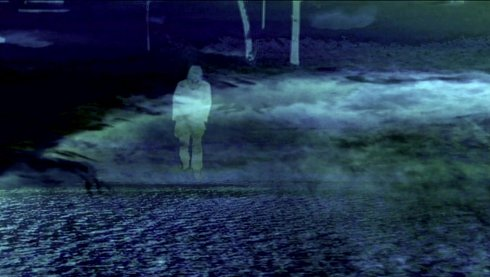

Artist in focus

guillaume cailleau
Wednesday 17 oct 8.30 pm werkstattkino
Born in France 1978, Guillaume Cailleau is based in Berlin. His works range from 16mm film and HD video to multimedia installations and performance. He researches common everyday processes and occurrences with the intent to expose details that tend to be overlooked but can be revealing if isolated and transposed into another context - that of a gallery, a museum or a theatre. Cailleau frequently collaborates, producing work across media and genre. Thus, he developed numerous audiovisual works and performances with Werner Dafeldecker and Timo Kreuser. Cailleau was also a long-term member of the collective LaborBerlin, which is devoted to preserving and developing the creative possibilities of the celluloid film format. He has also moved into film production; Good Luck (Russell 2017), which he produced, premiered last year in competition at Locarno Film Festival. His work has been shown worldwide in film festivals (including Berlin, New York and Rotterdam Intl Film Festival) and museums (Centre Pompidou in Paris and Royal Ontario Museum in Toronto). In February 2014, he won the silver bear at the Berlin International Film Festival with his short Film LABORAT. |
Guillaume Cailleau bridges conceptual working methods with playful
references to the avant-garde. This rich mix of forms expanded
cinema, experiments with human perception, and poetic compositions
makes the viewing experience very enjoyable. The artist's sincerity,
combined with a lighthearted wink of the artist's eye, adds to this
impression. Explorations (or games) with color separation, the
basics of color photography, are as much part of his artistic
arsenal as the lyric beauty of the rich black and white contrast of
high-con film combined associatively on an optical printer.
The artist and Berliner by choice first studied engineering, then
left Paris and his friends for an artist career in Berlin. He mostly
works with film, super-8 and 16mm but is not limited to these media.
Even though he has a lot of avant-garde references in his work, and
a conceptual rigor that can be sensed, he also has a playful stance
woven into artistic means, typical for a new Generation of artists
who rediscover the traditions of the avant-garde. This seems to
happen in totally different ways than the second generation after
1968 who were inclined to conceptual purism, like Hollis Frampton
and Ernie Gehr. This new generation finds there way back to a joyful
freedom that was already a characteristic of the early avant-garde
of early 60's in USA and United Kingdom. Nevertheless, this results
in being confronted with classical problems of art-making, again: As
Cailleau is saying, he is striving for the unity of form and
content. At the same time, he deals with two further avant-garde
themes: expanded cinema and the exploration of human perceptions.
(Director's Lounge, Contemporary Media and Art, Berlin)
Austerity Measures
| 2012 Co-director: Ben Russell – 16 mm – 9 min. – silent With Abdou Ouologuem
|
| A color-separation portrait of the Exarchia neighborhood of Athens, Greece, made during the Anti-Austerity protests in late 2011. In a place thick with stray cats and scooters, cops and Molotovs, ancient myths and new ruins; where fists are raised like so many columns in the Parthenon, this is a film of surfaces - of grafitti'd marble streets and wheat-pasted city walls - hand-processed in red, green, and blue.
|
IF AND ONLY IF
| 2012 Co-director: Hanna Slak – 16 mm on HD – 3 min – no dialogue
|
| Made out of long exposure single frames shot in the cold berlin Winter , this is a music video for Tam Rush's song "if and only if" (2009 - Rabeat's cage / Alter-k).
|
Lucile's Ghosts on Atlas Top, Bruxelles
| 2012 M: Nicholas Bussmann-Desamory – 16 mm on HD – 3 min – no dialogue With Lucile Desamory
|
| On the shooting of Lucile's film LE COIN DU DIABLE as we were waiting for the sun to rise, they came and played with us. (Guillaume Cailleau)
|
Abdou’s Dread in Teatro Argentino, Roma

| 2013 Lightdesign: Jean Dauriac – 16 mm – 3 min. – silent With Abdou Ouologuem
|
| A portrait of Abdou ouologuem - On tour with "A Magic Flute" by P. Brook: Between two rehearsals, Abdou is showing me how he deals with his dread on stage. (Guillaume Cailleau)
|
LABORAT
| 2014 K: Michel Balagué, Guillaume Cailleau – S: Hanna Slak – M: Werner Dafeldecker – 16 mm on HD – 21 min – no dialogue Silver Bear, Berlinale 2014
|
| Interior, day. Oncological Research Center in Berlin, January 2011. A film team meets with researchers. Using analogue filming methods, the film team records experiments performed on mice. The mice are forced to undergo diverse measures. Whether the film deals with one or several tests, one or several mice is difficult to ascertain – the tests and the naked animals are too similar. Parallel to this, the film team documents their own activities, necessary to make the recordings.
|
HANGING
| 2014 16 mm on HD – 4 min – silent
|
| A black and white negative documentation about a intime and extreme body experience.
|
ORGAN MOVEMENT
| 2016 M: Elmer Kussiac – 16 mm on HD – 12 min – no dialogue 2nd Prize 18.MuVi Award Kurzfilmtage Oberhausen 2016
|
| Waves tie relentless...tying Big and blue, I wander Timelines devolve. I am looking under While the water breaks A shuffled arc (Guillaume Cailleau)
|